What April is like in Guanacaste
April is typically the hottest month of the year in Guanacaste, still within the dry season but with rising humidity as the transition toward green season approaches. Early tours and hydration matter more this month than any other.
Where to go in April
Bijagua
A quiet mountain village at the gateway to Tenorio Volcano National Park and Río Celeste.
Explore →
Guanacaste
Costa Rica's Pacific province: dry forests, volcanic peaks and pristine Pacific beaches.
Explore →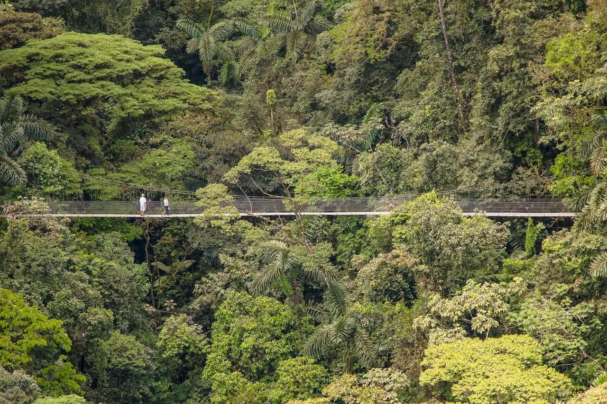
La Fortuna & Arenal
Volcano scenery, hanging bridges, wildlife and hot springs in Costa Rica’s adventure capital.
Explore →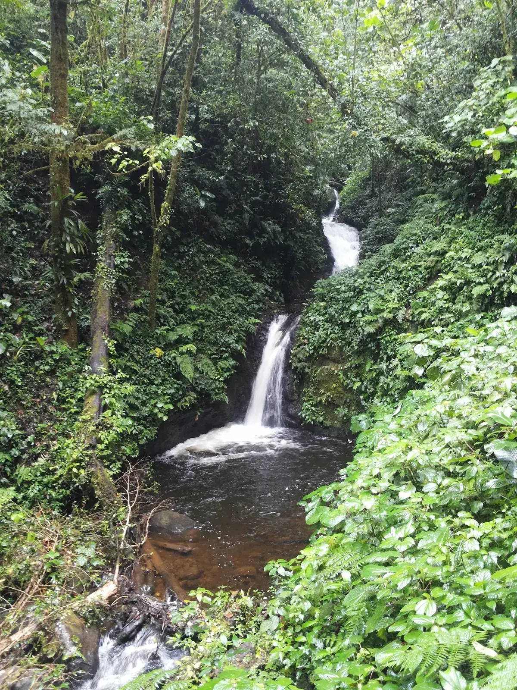
Monteverde
The jewel in the crown of Costa Rica's cloud forests.
Explore →
Papagayo
Private resorts, quiet bays and easy access to Guanacaste adventures.
Explore →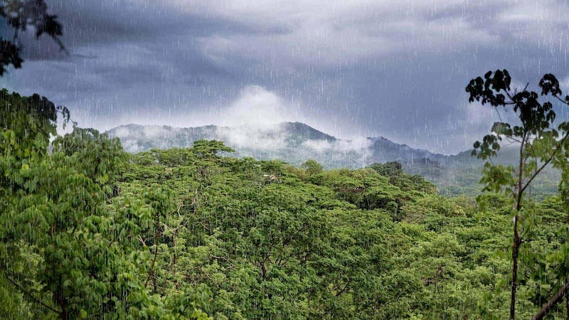
Playas del Coco
A convenient beach town with restaurants, live music and easy day-trip access.
Explore →Playa Hermosa
A calm Guanacaste beach with a relaxed atmosphere near Papagayo and Coco.
Explore →
Rincón de la Vieja
Volcanic landscapes, waterfalls and high-energy adventures close to Liberia.
Explore →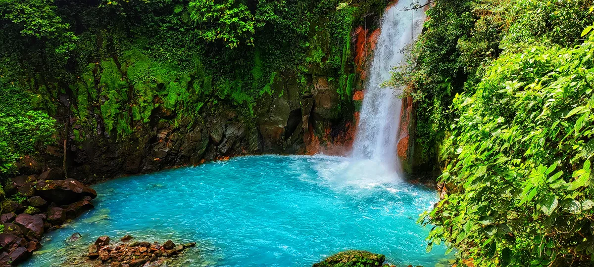
Río Celeste
A turquoise river flowing through Tenorio Volcano National Park, one of Costa Rica's most magical natural wonders.
Explore →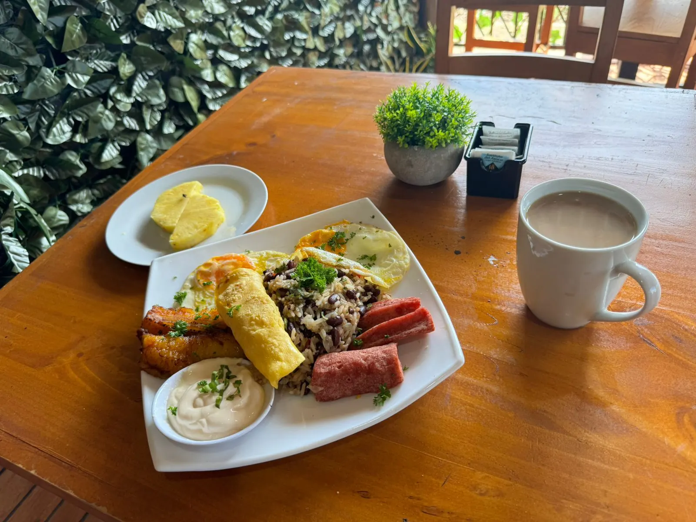
Sámara
A relaxed beach district on Guanacaste's Nicoya Peninsula.
Explore →
Tamarindo
Costa Rica's buzzing Pacific surf town on the Nicoya Peninsula.
Explore →Recommended tours for April
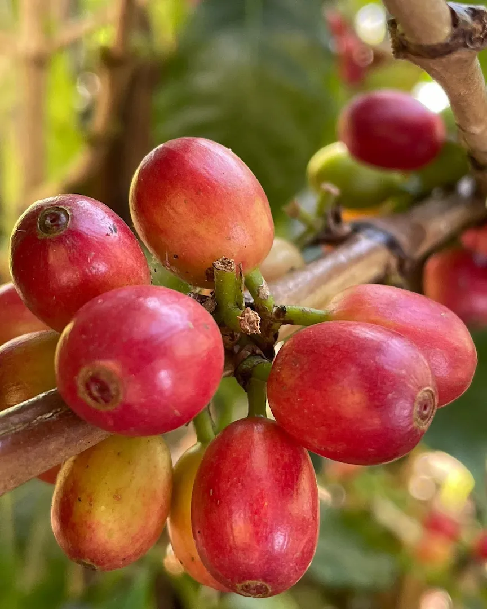
Monteverde Hanging Bridges & Coffee Tour
Private full-day Monteverde Cloud Forest experience, 8 Selvatura suspension bridges, butterfly garden, interactive coffee plantation tour from seed to cup, sugar cane and chocolate. Breakfast and lunch included.
View Experience →
Miravalles Volcano Waterfalls & Natural Spa
Private full-day at Miravalles Volcano, 3 cascading waterfalls, geothermal hot springs and volcanic mud treatments in a live crater. Lunch and all entrance fees included.
View Experience →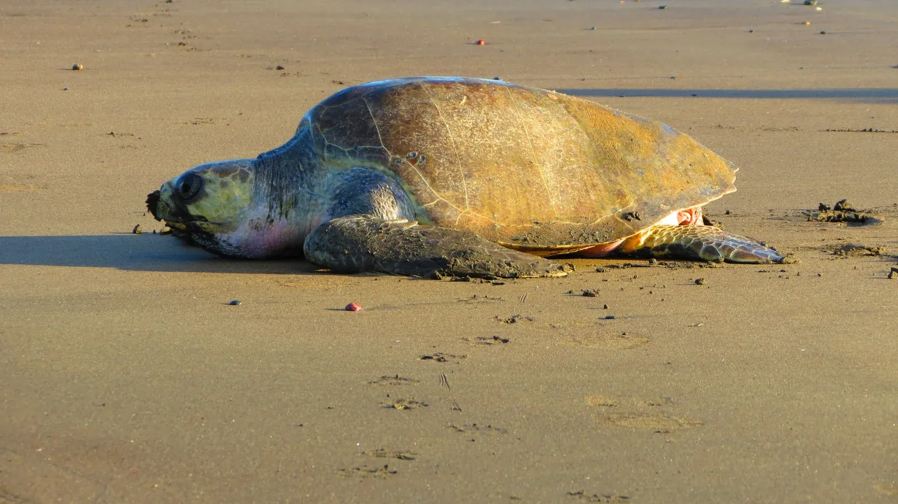
Ostional Turtle Watching Tour Costa Rica
Private nighttime tour to Ostional National Wildlife Refuge to witness olive ridley sea turtles nesting on the beach. Certified local community guide and responsible nighttime viewing under refuge lighting rules. Book via WhatsApp with Wild Papagayo.
View Experience →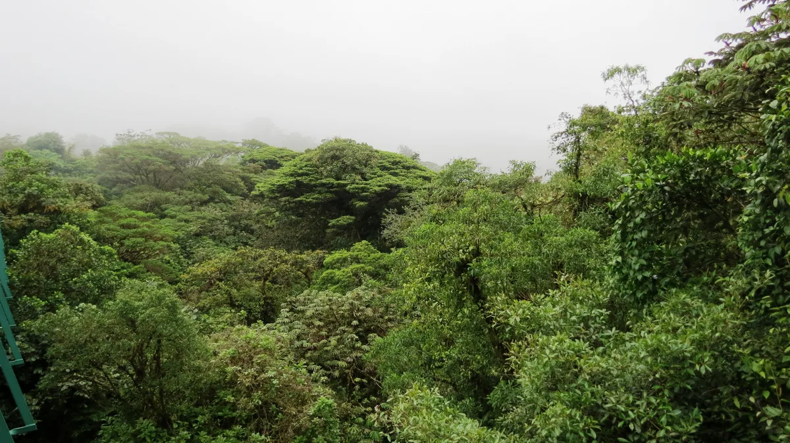
Monteverde Treetop Walk
Private full-day Monteverde Cloud Forest treetop walk, suspension bridges at canopy level with zip line (Classic option) or reptiles exhibition, butterfly garden and sloth sanctuary (Plus option). Breakfast and lunch included.
View Experience →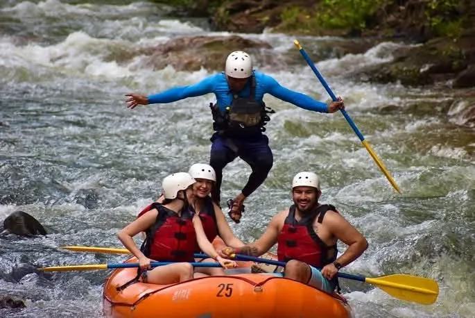
Tenorio River White Water Rafting Class III–IV
Private Class III–IV white water rafting on the Tenorio River, racing rapids, plunging over falls and lush tropical wildlife. Snacks and lunch included. Certified bilingual guide exclusively for your group.
View Experience →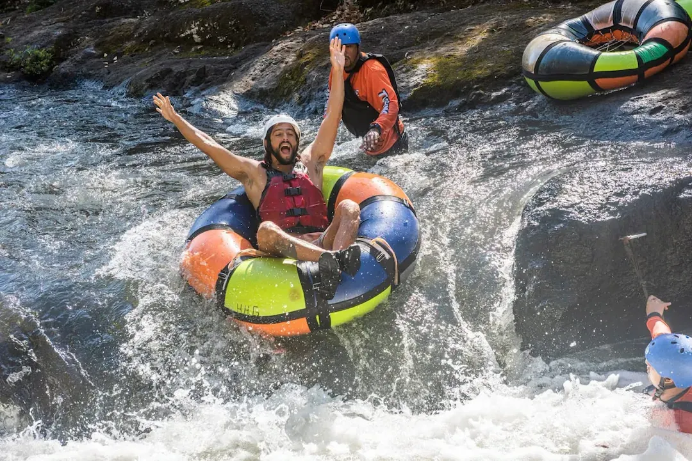
Hacienda Guachipelín Extreme
Private full-day extreme adventure at Hacienda Guachipelín, zipline, rappel, rock climbing, river tubing and hot springs in Guanacaste. Certified bilingual guide. Book with Wild Papagayo.
View Experience →April travel guides
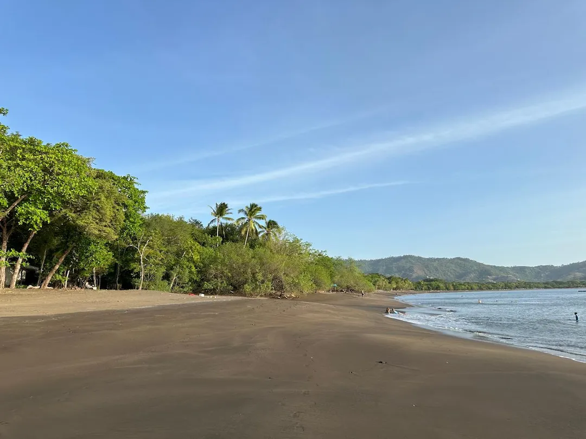
Playa Coco vs Samara: Which Beach Town Is Better for Your Costa Rica Vacation?
Playa Coco is livelier and closer to the airport; Samara is mellower and more scenic. Which fits your trip depends on the pace you want in Guanacaste.
Read Article →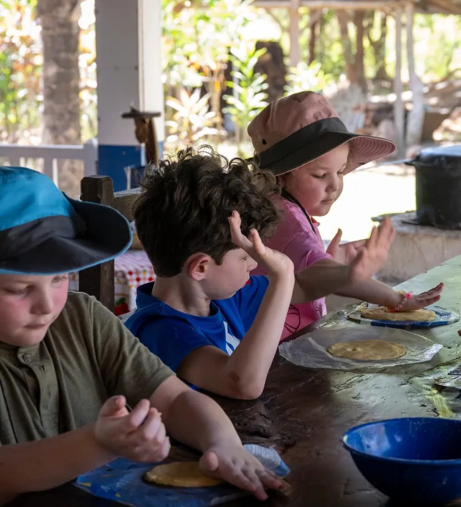
Costa Rica With an 11-Month-Old: Where Should You Stay?
Planning a first Costa Rica vacation with a baby can feel overwhelming. Here is an honest comparison of the weather, accommodations and easiest areas for a relaxed family trip.
Read Article →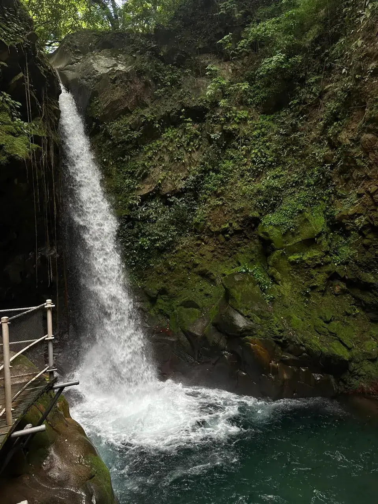
Best Waterfalls Near Papagayo: Which Day Trip to Pick
A local look at the best waterfall day trips from Papagayo, comparing drive time, walking difficulty, swimming access and how each changes between green and dry season.
Read Article →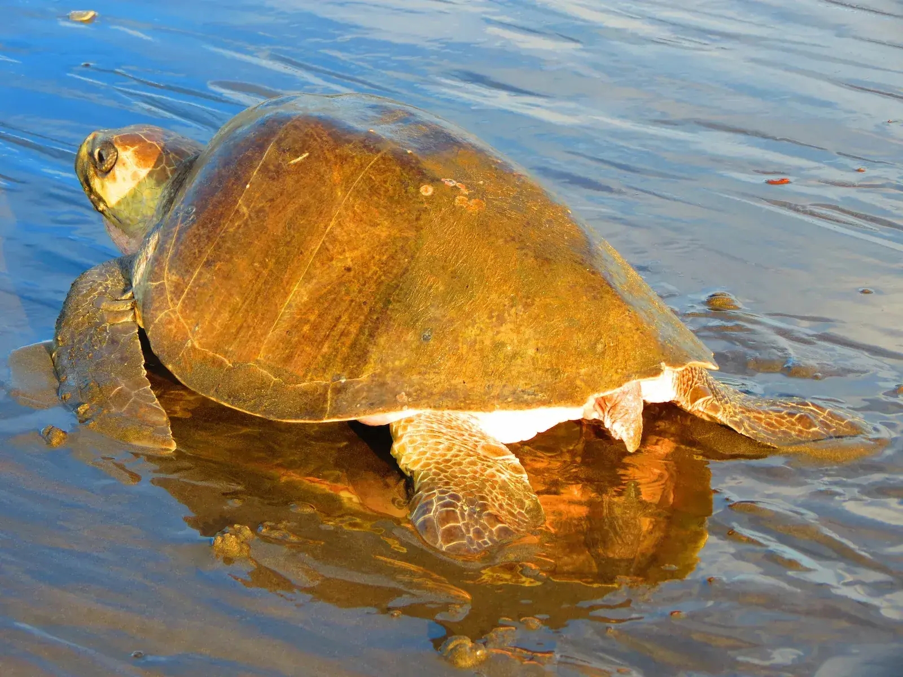
Sea Turtles in Costa Rica: How to See Them Responsibly
Costa Rica’s Pacific and Caribbean beaches provide critical nesting habitat for sea turtles. Learn where they nest and how to observe them responsibly.
Read Article →
Dry Season in Guanacaste: What to Expect From December to April
December through April is Guanacaste's dry season: generally drier, sunnier and busier for bookings, though rain and inland rainforest conditions still matter for planning.
Read Article →Plan your Costa Rica in April experience with a local expert.
Private transportation, personalized tours and practical advice in one conversation.